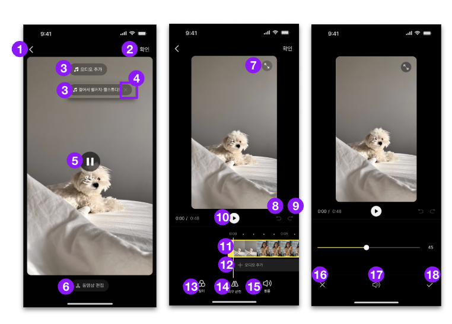

앱업로더 인사이트
총량은 작지만 오디오 선택을 한 사용자는 반복 사용이 높습니다. 문제는 음원 선택까지 오는 사용자 폭이 아직 좁다는 점입니다.
앱업로더와 웹스튜디오를 탭으로 나눠 각각의 사용 흐름과 일자별 이벤트 추이를 확인합니다.
총량은 작지만 오디오 선택을 한 사용자는 반복 사용이 높습니다. 문제는 음원 선택까지 오는 사용자 폭이 아직 좁다는 점입니다.
음악을 찾고 재생하는 의도는 매우 강합니다. 다만 추가 클릭 이후 완료까지 약 23.2%가 빠져, 마지막 적용 UX가 우선 개선 지점입니다.
웹스튜디오는 탐색-재생-추가 흐름이 이미 크고, 앱업로더는 초기 검증 단계입니다. 앱업로더는 진입 확대, 웹스튜디오는 완료 전환 개선이 핵심입니다.
릴리즈 이후만 필터한 앱/웹 합산 데이터입니다. 최근 7일 평균은 2026-07-21~2026-07-27 기준이며, 앱업로더 MO-SF12.16 67건 + 웹스튜디오 오디오_추가_완료_클릭 199건을 합산했습니다.
초기 서비스라 총량보다 “진입한 사람이 실제 음원 선택과 발행 흐름까지 가는지”를 보는 것이 핵심입니다.
앱업로더 원본 리포트의 일자별 전체 이벤트수와 순방문자수 추이를 함께 표시했습니다.
캡쳐 플로우 기준으로 관련 action_code를 묶어 합산했습니다. UV는 일자·코드·OS별 합산 기준입니다.
오디오 선택 50건, 오디오 트랙 선택 29건으로 평소 대비 각각 7.4배, 8.3배 수준입니다.
확인 79건, 타임라인 선택 70건도 함께 높아져 특정 기능만이 아니라 편집 플로우 전체 사용이 늘어난 날로 보입니다.
오디오 추가, 리스트, 구간 편집 관련 코드도 함께 튀어 배포 후 내부 검수나 특정 사용자군 집중 사용 가능성이 있습니다.
이벤트 총량은 iOS가 크지만, UV 대비 이벤트 반복도는 Android가 더 높습니다. 오디오 구간 편집은 Android 쪽 이벤트가 상대적으로 강합니다.
상위 10개 코드 합산 이벤트수 1,240건, 전체의 87.0%입니다.
화면 위 보라색 점에 마우스를 올리면 행동명과 클릭 평균이 보입니다.

앱업로더 최신 CSV에 있는 7일 기준입니다. 2026-07-28 앱업로더 원천 행이 추가되면 기간을 7/21~7/28로 다시 맞출 수 있습니다.
웹스튜디오는 음원 탐색 의도가 충분히 크므로, 오디오 추가 이후 완료까지의 마지막 단계를 줄이는 것이 우선입니다.
웹스튜디오는 현재 소스에 있는 일자별 이벤트수 기준으로 표시했습니다.
새 웹스튜디오 CSV 기준입니다. 해당 파일은 action_name별 이벤트수만 포함하고 UV는 포함하지 않습니다.